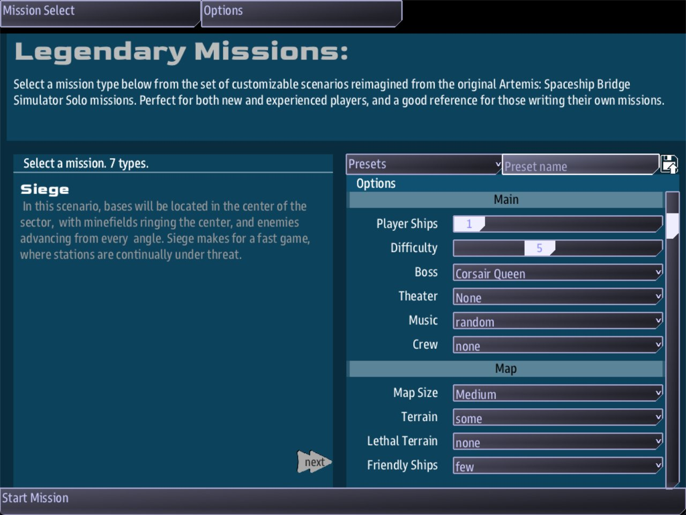

Class 2, Lecture 8 - A Siege boss, part 1¶
What you will have at the end¶
Your own boss in the Siege game's Boss list: a named flagship that arrives with two escort fleets, and an objective the crew must finish to win.

Siege's Options panel, with Corsair Queen chosen on the Boss line.You will write no code. You will copy one short file and change the words in it.
Your boss lives in a folder of your own, outside LegendaryMissions, so updating the game never deletes it.
The video¶
About 6 minutes. Subtitles are available in the player.
Before you start¶
This lecture does not start from MyMission. A boss is not part of a mission of yours. It
is one file that the Siege map of Legendary Missions reads. So you start from two things
that are already on your computer:
C:\Cosmos\data\missions\LegendaryMissions, the mission you played in Class 1, Lecture 1. It came with the game.C:\Cosmos\data\missions\common_data, a folder the game keeps beside the missions.
Leave MyMission as it is. You come back to it in the next class.
From Class 1 you need three things:
- You can open a folder in VS Code, and the AMD add-on is installed.
- You can run
sbs lintfrom a command prompt indata\missions. - You know the shape of a record: a heading, a fence between two
---lines, and a body.
Words for this lecture:
| Word | Meaning |
|---|---|
| Raider | An enemy ship in a Siege. The Siege counts the raiders that are left |
| Boss | A named enemy who arrives late in the battle, with ships of her own and a job for the crew |
| Flagship | The boss's own ship, the one with a name |
| Objective | A quest written under a boss. The crew is given it when she arrives |
Step 1 - Read the Warlord¶
In VS Code, choose File, then Open Folder, and open the data\missions folder
itself: the folder that holds LegendaryMissions. You need two folders inside it today,
so open the one above them both.
In the file list, open LegendaryMissions, then maps, then bosses, then
warlord.amd.
The file holds two records.
The boss. This is the part that says who arrives and when.
# [Warlord](warlord)
---
Boss
Trigger: enemies_low
Low: 25%
Flies: 50% Kralien, 50% Torgoth
Fleets: 2
Difficulty: +1
Named: Warlord kralien_dreadnought
---
A raider warlord and their honor guard warp in to break the defenders.
| Line | What it means |
|---|---|
# [Warlord](warlord) |
The name the crew sees in the Boss list, then the key |
Boss |
What kind of record this is |
Trigger: enemies_low |
The boss arrives when the raiders thin out |
Low: 25% |
"Thin out" means one quarter of the raiders are left |
Flies: 50% Kralien, 50% Torgoth |
Which races the escort fleets are drawn from |
Fleets: 2 |
How many escort fleets arrive |
Difficulty: +1 |
One step harder than the difficulty the game was set to |
Named: Warlord kralien_dreadnought |
The flagship: its name, then which ship it is |
| The last line | A description, for you. The game does not show it to the crew |
The objective. This is a quest, exactly like the ones you wrote in Class 1. The crew reads it in the Quest Log, on Helm's handheld, when the boss arrives.
## [Defeat the Warlord](defeat_warlord)
---
Quest
Scope: shared
State: active
Parent: siege_mission
Required: true
Done when: signal siege_won
Reward: 500 credits
---
Destroy the raider Warlord to break the siege for good.
| Line | What it means |
|---|---|
Scope: shared |
The whole crew holds this quest, not one ship |
State: active |
It is live the moment the boss arrives |
Parent: siege_mission |
It belongs to the Siege's own mission. Parent: is an older spelling of Part of: |
Required: true |
The crew cannot win without it |
Done when: signal siege_won |
The Siege sends siege_won when every raider is gone, the boss's ships included |
Reward: 500 credits |
What finishing it pays. The credits go to the crew's side |
Today you change the words. Part 2 changes the numbers.
Step 2 - Make your copy¶
The bosses that come with the game are in LegendaryMissions\maps\bosses. Yours go
somewhere else: data\missions\common_data\bosses. The Siege reads both folders.
- In the VS Code file list, right-click
warlord.amdand choose Copy. - Scroll the file list to
common_dataand open it. If it has nobossesfolder, right-clickcommon_data, choose New Folder, and typebosses. - Right-click that
bossesfolder and choose Paste. A file namedwarlord.amdappears in it. - Right-click the new file, choose Rename, and type
corsair_queen.amd.
Use lowercase letters and underscores, with no spaces, and keep .amd at the end.
Open corsair_queen.amd, the one in common_data\bosses. Every change from here on is
in this file. Leave warlord.amd alone.
| Folder | Whose | What an update does to it |
|---|---|---|
LegendaryMissions\maps\bosses |
The game's | Replaced. A file you added is gone |
common_data\bosses |
Yours | Left alone |
Check it now, before you change a word. In a command prompt in data\missions:
== common_data\bosses\corsair_queen.amd ==
[WARNING] line 6:4: `Warlord` is also the name of the boss in `warlord.amd`. A boss list offers bosses by name, so only one of the two can appear - give this one a name of its own (duplicate-boss-name)
1 amd + 0 mast file(s): 0 error(s), 1 warning(s)
That is a true warning: your copy still has the Warlord's name. Step 3 fixes it.
Step 3 - Rename the boss¶
Change the first heading:
The words in square brackets are what appears in the Boss list. The word in round brackets is the key; make it match your file name.
The name must be new. If two boss files have the same name in square brackets, only one of them is in the list, and it is yours: the game's own Warlord is gone from the list until you rename. That is the warning you just read.
Step 4 - Name the flagship¶
Change the Named: line:
The first word is the ship's name. The second word says which ship it is; leave it as it is today.
The name is one word.
Named: Iron Duke kralien_dreadnoughtdoes not make a ship called "Iron Duke". The game reads it as a ship called "Iron" of a kind called "Duke", and there is no such kind of ship. WriteIronDukeorIron_Duke. Lint warns about this one too, and shows you the corrected line.
Step 5 - Write her entrance¶
Replace the description line under the fence with your own:
The Corsair Queen watched the siege falter from the dark. Now she brings her own ships to finish it.
Type plain quotes and plain hyphens, as you have since Class 1, Lecture 4.
This line is a note about her, for you and for anyone you give the file to. The game does not show it to the crew. Lecture 11 gives her words the crew does read.
Step 6 - Rename the objective¶
Change the second heading, the reward, and the last line:
## [Sink the Morrigan](sink_morrigan)
---
Quest
Scope: shared
State: active
Parent: siege_mission
Required: true
Done when: signal siege_won
Reward: 600 credits
---
The Queen's flagship Morrigan leads the last assault. Destroy her and every raider with her.
Leave the five lines between Quest and Reward: exactly as they are. Keep the word
credits after the number.
Step 7 - Fix the note at the top¶
Lines that start with // are notes to yourself. The game ignores them. Replace the four
note lines at the top with your own:
// The Corsair Queen - my first Siege boss. A copy of the Warlord with new names.
// She arrives when the raiders thin out, with two escort fleets and one named flagship.
The finished file¶
// The Corsair Queen - my first Siege boss. A copy of the Warlord with new names.
// She arrives when the raiders thin out, with two escort fleets and one named flagship.
# [Corsair Queen](corsair_queen)
---
Boss
Trigger: enemies_low
Low: 25%
Flies: 50% Kralien, 50% Torgoth
Fleets: 2
Difficulty: +1
Named: Morrigan kralien_dreadnought
---
The Corsair Queen watched the siege falter from the dark. Now she brings her own ships to finish it.
## [Sink the Morrigan](sink_morrigan)
---
Quest
Scope: shared
State: active
Parent: siege_mission
Required: true
Done when: signal siege_won
Reward: 600 credits
---
The Queen's flagship Morrigan leads the last assault. Destroy her and every raider with her.
Save the file. It is in example\.
Step 8 - Check it¶
In a command prompt in data\missions, type:
It checks only the bosses in your folder. You want to see:
sbs lint LegendaryMissions checks your bosses too, among every other file in the
mission.
Each mistake below was made on purpose, one at a time, in the finished file. The word in the last column is at the end of the line lint prints.
Lint tells you.
| Mistake | What the game does | Lint says |
|---|---|---|
The name in square brackets is still Warlord |
One Warlord in the Boss list, and it is yours. The game's own is gone from the list | duplicate-boss-name |
Named: Iron Duke kralien_dreadnought |
A ship named Iron arrives, of a kind of ship the game does not have |
hull-name-shape |
Fleats: 2 for Fleets: 2 |
The Morrigan arrives with no escort fleets | unknown-field |
Done when: signal seige_won |
The objective can never be finished. Every raider is destroyed and the game does not end | unfired-signal |
The word Quest deleted from the second fence |
It still plays | unknown-field, on five lines of that fence |
| The boss's heading with two hashes | She is still in the list. mast.runtime.log has a line about the heading |
An error: heading-level-jump |
#[Corsair Queen](corsair_queen), no space after the hash |
Your boss is gone from the list. In her place the list offers a boss named Sink the Morrigan | Errors: broken-heading, then heading-level-jump |
# [Corsair Queen] (corsair_queen), a space before the round bracket |
The same | The same |
The closing --- of the first fence deleted |
She is still in the list. mast.runtime.log has a line about the fence |
An error: unclosed-data-fence |
| Curly quotes or a long dash in the description | Nothing. This line is not shown | non-ascii, once for each mark |
The line for the flagship, in full:
[WARNING] line 12:8: `Iron Duke kralien_dreadnought` reads as a ship named `Iron` on a hull called `Duke` - a name is ONE word here. Write `Iron_Duke kralien_dreadnought` (hull-name-shape)
What lint cannot see. Lint says clean for every row here. Check these by eye.
| Mistake | What the game does |
|---|---|
Reward: 600, with the word credits left off |
The objective is finished and nothing is paid |
The State: active line deleted |
The objective is a job waiting to be accepted, not a live one. Every raider is destroyed and the game does not end |
| The objective's heading with one hash | The objective never appears. The crew wins without it, and its reward is not paid |
The Parent: siege_mission line deleted |
The objective is finished and paid, but it is not part of the ending. The crew could win without it |
The word Boss deleted from the first fence |
Nothing. She plays the same |
| The key in round brackets is not the file's name | Nothing. Keep them the same anyway, so you can find the file |
mast.runtime.log is in the LegendaryMissions folder. It is empty after a clean game.
Step 9 - See her in the list¶
- In a command prompt in
data\missions, type:
There is no map=0 on this line. Three windows open, and the server's window stops at
the mission's own start screen, the one you saw in Class 1, Lecture 1.
2. On the left, stay on Siege.
3. On the right is the panel named Options. Open the list on its Boss line.
Corsair Queen is in the list, at the top, above the game's own bosses. Choose her, then press Start Mission.
The game reads both bosses folders when the mission starts. If you add or rename a boss
while the game is running, close the windows and start again to see it.
Step 10 - Meet her sooner¶
At Low: 25% you have to destroy three quarters of the raiders before she arrives. While
you are testing, change that one line:
Now she arrives as soon as one raider in ten is gone. A Siege at difficulty 5 can open with sixteen raiders. With sixteen, she arrives after the second kill.
She does not come because time passes. If nobody destroys a raider, she never arrives.
When she arrives you should see:
- a ship named Morrigan among the raiders. Science's contact list shows a raider as
unknownuntil it is scanned, so find her on Science's map, or scan the raiders and then press the chip for her race (kralien-o): she is the row named Morrigan, - two new raider fleets with her, a few ships in each,
- a new objective, Sink the Morrigan, in the Quest Log on Helm's handheld.
Nothing tells the crew that she has arrived, or that the list has grown. Lecture 10 shows one way to say so, and Lecture 11 gives her a voice.
Destroy every raider, hers included, and the crew wins. The crew's side is paid 1,100 credits: your 600, and 500 that the Siege pays for keeping every starbase.
Change Low: back to 25% when you are done testing.
Keep your work safe¶
Your boss file is in common_data\bosses, not inside LegendaryMissions. An update to
LegendaryMissions replaces the LegendaryMissions folder and nothing else, so your boss
stays where it is.
It is still one file on one computer. Keep a copy somewhere else, the way you would with a manuscript.
To give your boss to a friend, send them the .amd file. They put it in their own
common_data\bosses folder.
If something goes wrong¶
| What you see | Likely cause |
|---|---|
| Your boss is not in the list | The file is not in data\missions\common_data\bosses, its name does not end in .amd, or the game was already running when you saved it |
| Only one "Warlord" in the list and no new boss | You did not change the name in square brackets (Step 3) |
| A boss named Sink the Morrigan is in the list | The first heading is not read as a heading. Look for a missing space after the #, or a space in front of the round bracket |
| The flagship has half its name | The name in Named: has a space in it (Step 4) |
| She never arrives | She is not chosen on the Boss line, or not enough raiders are destroyed yet (Step 10) |
| Every raider is gone and the game does not end | The objective cannot be finished. Run lint, then look for a missing State: active line |
| The crew wins and is paid 500, not 1,100 | Reward: has no word after the number, or the objective's heading has one hash |
| Lint warns about every line of the first fence, or the Options panel has no Boss line | Your copy of the game or of sbs is older than this course. Let the store update the game to 1.4.0, and type sbs update |
Exercise¶
Make a second boss, from your own setting.
- Copy
corsair_queen.amdto a new file with its own name, in the samecommon_data\bossesfolder. - Give the boss a new name and key.
- Give the flagship a one-word name.
- Write the description and the objective in your own voice.
- Pick your own reward.
- Run
sbs lint common_data\bosses. It lists both files. Both should sayclean.
Checkpoint¶
You are done when all four are true:
sbs lint common_data\bossesshows your file asclean.- Your boss is in the Siege Boss list under the name you gave it.
- In a game, the flagship arrives with the name you gave it.
- The objective you wrote is in the Quest Log when it does.
Next¶
Part 2 changes the numbers: when the boss arrives, what it flies, how many fleets, how hard, and which ship the flagship is. Part 3 gives the boss an objective of its own that is more than "destroy everything".
Further reading¶
- "Writing a Siege boss" in the LegendaryMissions documentation: the reference for every boss field.
- "Quests" in the library documentation: every quest field, including the ones you left alone today.
Download this lecture's finished files (a zip of its example folder).